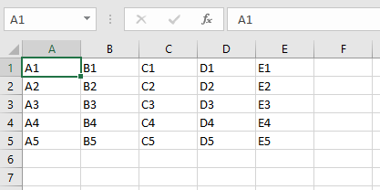
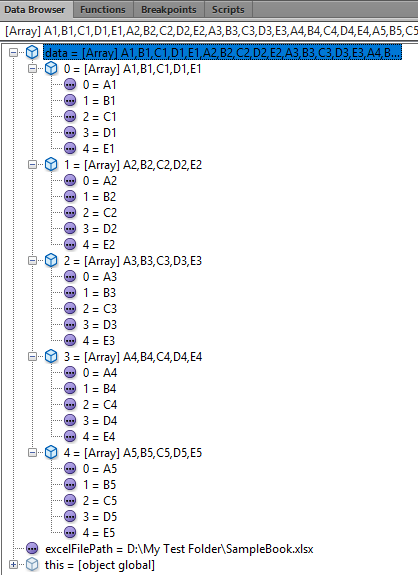
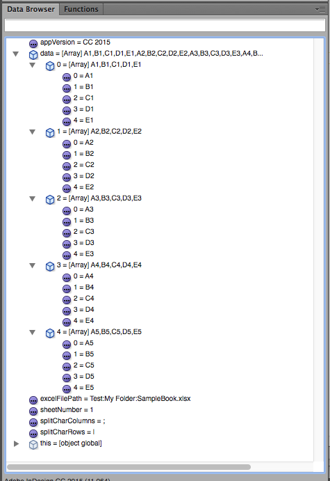

Get data directly from Excel
The function was written and tested in InDesign CC 2017 and Excel 2016 (Version 16) on Windows 10. Theoretically it should work in all versions from CS (3) to CC 2017 (12).
Function for Windows
Quite often I have to write scripts that use data originated from an Excel worksheet. I (and most scripters) believed that the easiest approach was to use a CSV-file exported from Excel. However, this takes an extra step for the user so I decided to write a function that opens an Excel book in background, reads the data from its spreadsheet and returns array.
The function has three arguments:
- excelFilePath — The platform-specific full path name for the xlsx-file — fsName. If you pass it as a string, make sure to double the backslashes in the path like in the line below:
var excelFilePath = "D:\\My Test Folder\\SampleBook.xlsx"; - splitChar — [Optional] the character to use for splitting the columns in the spreadsheed: e.g. semicolon (;) or tab (\t)
If it isn't set, semicolon will be used by default. - sheetNumber — [Optional] the worksheet number: either String or Number. If it isn't set, the first worksheet will be used by default
The data in Excel

The same data transfered to InDesign as Array

It’s possible to reference a spreadsheet by name instead of a number by using a name enclosed with escaped double quotes (inch marks) like so:
Click here to download the function.
Here’s a practical example: a script that uses this function.
I posted all two versions I developed so far. Recommend you to use the last one: currently 2.0.
Version 2 allows you to get the data from all spreadsheets in a workbook. Also, it gets the name of the spreadsheet.
The VBS-code has a try-catch block so you can set a maximum number of spreads to try to open, and once an error occurs (the spread with the number is unavailable) the script breaks the loop. I tried to make a more elegant solution, but it didn't work for some reason: it worked perfectly as a stand alone visual basic script run in VBA, but failed when triggered from JavaScript via doScript method. (Anyway, Adobe didn't promise that such a perverted script would work.) So I've found the woraround: not so elegant, but it works!
Here's a sample code illustrating how to use it.
Important note: if you get the "Cannot create ActiveX Component" error message, run InDesign as administrator to recreate the "Resources for Visual Basic.tlb" file.
See also Get sheets number function
Function for Mac
Important note: why AppleScript run from JavaScript doesn't work anymore?
It works in the same way as the abovementioned counterpart for Windows and was tested in InDesign CC 2015 and Excel 2011 (Version 11) on Mac OS X 10.10 (Yoshemite).

The function has four arguments:
- excelFilePath — The Mac-specific – colon separated – full path name for the xlsx-file like in the line below:
var excelFilePath = "Test:My Folder:SampleBook.xlsx"; - splitCharRows — [Optional] the character to use for splitting the rows in the spreadsheed. If it isn't set, pipe (|) will be used by default
- splitCharColumn — [Optional] the character to use for splitting the columns in the spreadsheed: e.g. semicolon (;) or tab (\t) If it isn't set, semicolon will be used by default
- sheetNumber — [Optional] the worksheet number: either string or number. If it isn't set, the first worksheet will be used by default
The function returns an array in case of success; null -- if something went wrong: e.g. called on PC, too old version of InDesign.
Here's the function for Mac.
And here is another example of getting a few spreadsheets on Mac.